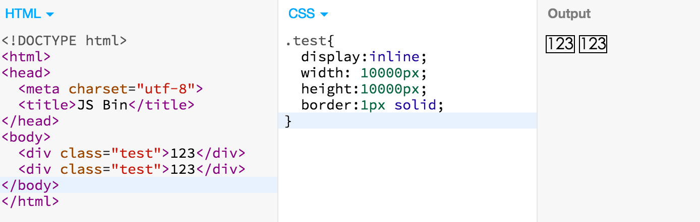
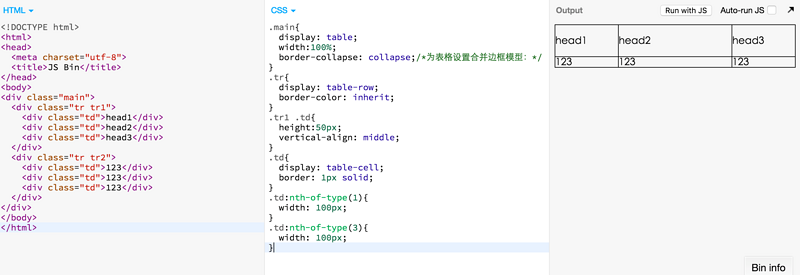
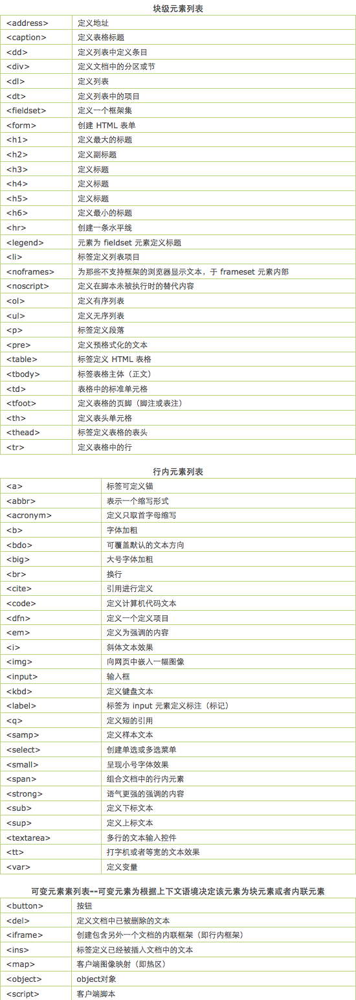

块级元素
- 1.会另起一行,可以包含行内元素和其他块级元素
- 2.可以设置width，height，margin，padding，border属性
- 3.默认宽度是容器的100%
行内元素
- 1.和其他元素在同一行内，只能包含数据和其他行内元素
- 2.高度和宽度就是内容的高度和宽度
- 3.可以设置margin-left和margin-right属性，无法设置margin-top和margin-bottom属性
- 4.border和padding可以设置，但是border-top和padding-top到页面顶部后就不再增加
display:inline

display:table

默认的inline与block元素列表
